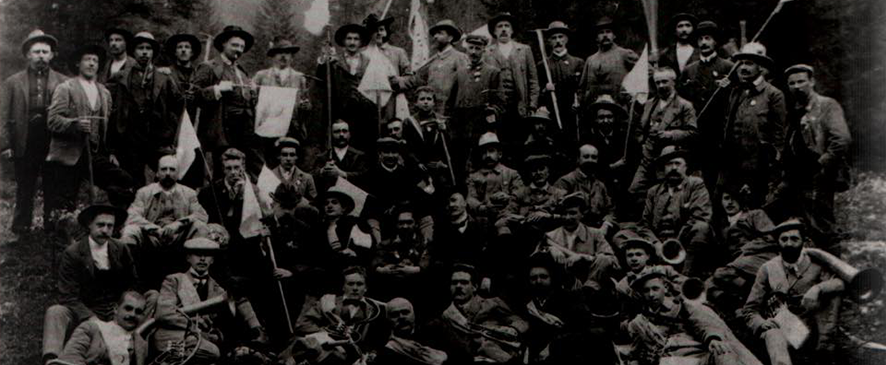
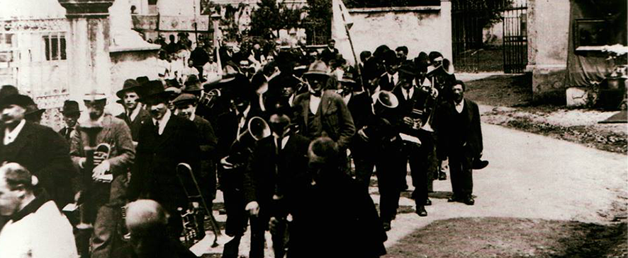
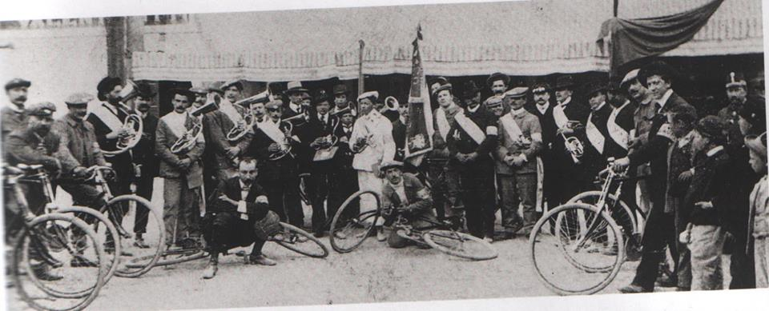
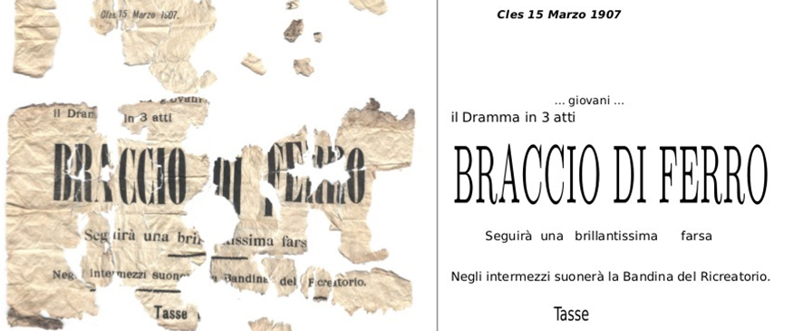
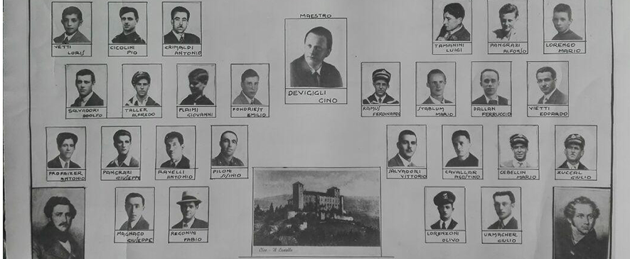
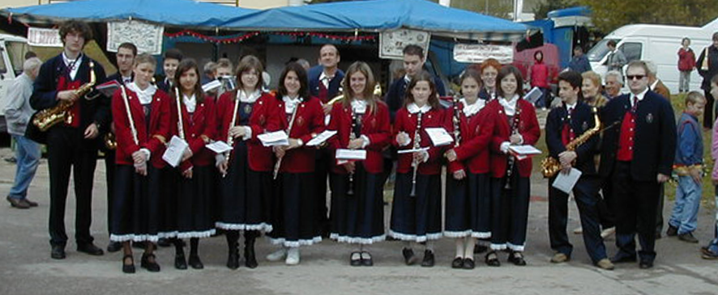
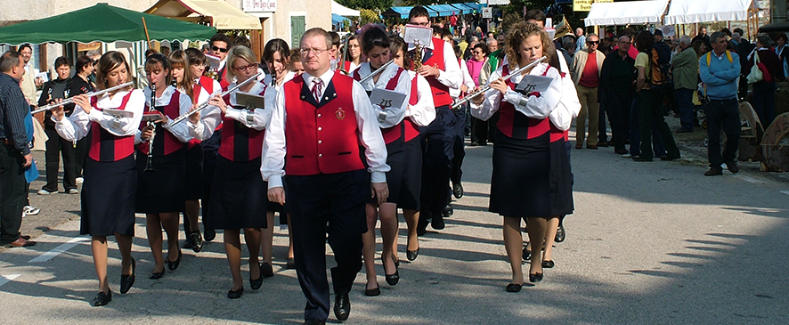
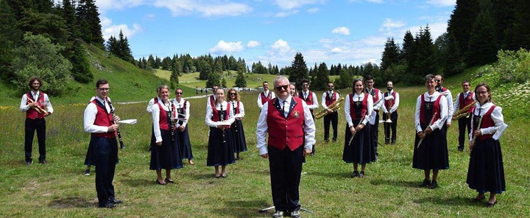

La banda di Cles è una delle associazioni più antiche della
borgata: abbiamo testimonianze della sua esistenza a partire dalla fine del diciannovesimo secolo.
Purtroppo, a causa di un organico sempre più ridotto, l'associazione è stata sciolta negli anni '60, per
poi essere rifondata nel 1999. Curioso di saperne di più? Scorri la pagina e scopri la storia della
nostra associazione!

Questa è la foto più antica del Corpo Bandistico di Cles di cui siamo a
conoscenza. L’anno esatto di fondazione del sodalizio musicale non ci è noto, quindi per ora la
nostra storia inizia da qui. In quei tempi la banda non aveva ancora un'uniforme a causa della
mancanza di risorse; i bandisti
indossavano semplicemente i loro abiti da festa. Un’altra assenza molto importante era quella delle
donne che solo molti anni più tardi entrarono a far parte del gruppo.

La banda di Cles impegnata nella processione del "Corpus Domini". Un tempo la
popolazione che abitava lungo le vie del paese attraversate dal corteo esponeva dei drappi sontuosi
alle finestre delle proprie case. Questa tradizione non è ormai più in uso, mentre quella
riguardante la presenza della banda permane. La banda non è un'associazione a carattere religioso,
non è necessario essere credenti per farne parte, basta saper suonare uno strumento musicale. Ciò
nonostante la sua presenza ai riti religiosi rappresenta una costante della storia della banda.

Nascita dell'Unione sportiva del gruppo ciclisti a Cles. Anche in questa occasione
è presente la banda che arricchisce i festeggiamenti con la sua musica. Lo sport, come la musica, è
una delle cose più belle che l'uomo possa creare. Sembrano così distanti ma in realtà sono molto
vicine, quasi simili per le caratteristiche che le contraddistinguono da tutto il resto. Entrambe
richiedono impegno, allenamento e disciplina per ottenere buoni risultati. Entrambe insegnano valori
quali l'unione e l'amicizia e permettono di condividere ciò che più amiamo con persone anche molto
diverse dal nostro modo di essere, mettendo in secondo piano qualsiasi differenza e facendo invece
prevalere i punti in comune e i legami interpersonali.

Grazie a questa locandina sappiamo che la banda allietava il pubblico con le sue
note anche a teatro. La formazione musicale, qui citata come “bandina del Ricreatorio”, rallegrava e
intratteneva la platea durante gli spettacoli. Questo aspetto è stato ripreso dalla banda anche in
tempi più moderni, con concerti “teatralizzati” come “I musicanti di Brema” e “La leggenda di San
Romedio”.

La banda oratoriale di Cles. In questo documento fotografico, donato alla
banda da Walter Dusini, si possono leggere i nomi dei bandisti della formazione musicale degli anni
‘30. È interessante notare che molti dei cognomi dei bandisti di allora sono i cognomi dei bandisti
di oggi, il che ci lega ancor di più ai nostri predecessori. Il corpo musicale operava in quegli
anni nell’ambito della Parrocchia e dell’Oratorio di Cles, e così fu fino allo scioglimento degli
anni ‘60.
La banda suona in piazza, in queste foto provenienti dall’archivio di Attilio
Springhetti. La formazione bandistica continuò a funzionare, con alterne fortune, fino allo
scioglimento del sodalizio negli anni ‘60, causato dalla mancanza di nuove leve. Pur non essendo
ancora dotati di una divisa, i bandisti iniziarono a essere riconoscibili per il cappello con
l’arpa, elemento che è stato ripreso anche nelle divise di oggi.

Assente dalla metà degli anni ’60, la banda a Cles viene rifondata nel 1999 per
iniziativa dell’Amministrazione Comunale e della Scuola di musica Celestino Eccher con il nome di
Banda Giovanile di Cles, composta da venticinque ragazzi, i più piccoli dei quali frequentavano la
scuola elementare, i più grandi gli ultimi anni della scuola media. Sotto l’attenta ed appassionata
direzione del Maestro Pierpaolo Albano il gruppo a poco a poco cresce ed esordisce presso il
Carnevale Clesiano, a febbraio 2000. Di qui inizia a proporsi e a diventare ospite fisso di alcune
delle principali manifestazioni della borgata, mette in piedi il primo concerto e si appropria di
uno spazio nella compagine culturale clesiana.

Nel 2002 l’Amministrazione decide che è arrivato per la Banda il tempo di
camminare con le proprie gambe e invita a trasformare la Banda Giovanile di Cles in associazione,
sotto il nome di Gruppo Bandistico Clesiano, aperta pure all’ingresso di adulti. Il primo presidente
è Lauro Penasa, che rimane in carica fino al 2009. La progressiva crescita della qualità del suono
permette le prime uscite extra comunali e con l’andare del tempo si rafforza la presenza del Gruppo
Bandistico Clesiano all’interno della borgata attraverso l’organizzazione, con la collaborazione di
Comune e Pro Loco, di eventi e concerti, come la partecipazione alla Fiera del I Maggio, al
Carnevale, alla Festa dell’Assunta, alla Festa dello Sport e al concerto di Natale.

Oggi il Gruppo Bandistico Clesiano conta al proprio attivo quasi trecento
partecipazioni, tra uscite e concerti, ha un repertorio che supera i centottanta brani e rappresenta
ormai una solida realtà nel vasto panorama provinciale. Come in ogni associazione l’innesto di nuove
leve risulta fondamentale: per questo la banda ricerca e sostiene ogni anno l’avvicinamento alla
musica di nuovi allievi.
 La banda suona in piazza, in queste foto provenienti dall’archivio di Attilio
Springhetti. La formazione bandistica continuò a funzionare, con alterne fortune, fino allo
scioglimento del sodalizio negli anni ‘60, causato dalla mancanza di nuove leve. Pur non essendo
ancora dotati di una divisa, i bandisti iniziarono a essere riconoscibili per il cappello con
l’arpa, elemento che è stato ripreso anche nelle divise di oggi.
La banda suona in piazza, in queste foto provenienti dall’archivio di Attilio
Springhetti. La formazione bandistica continuò a funzionare, con alterne fortune, fino allo
scioglimento del sodalizio negli anni ‘60, causato dalla mancanza di nuove leve. Pur non essendo
ancora dotati di una divisa, i bandisti iniziarono a essere riconoscibili per il cappello con
l’arpa, elemento che è stato ripreso anche nelle divise di oggi.